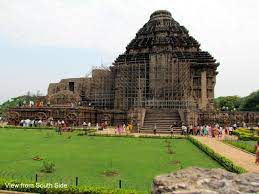
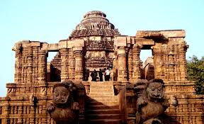
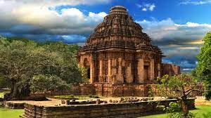
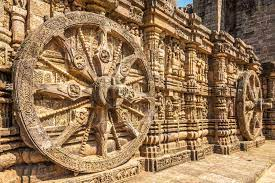
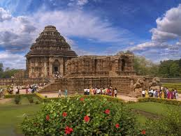
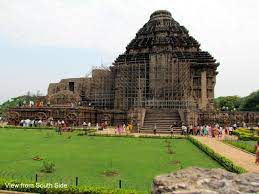
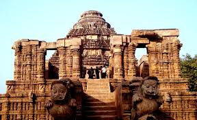
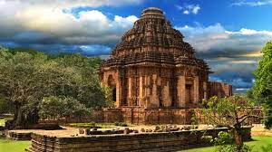
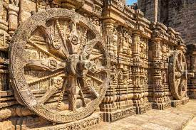
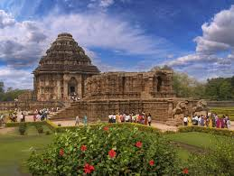

Konark
Dedicated to the Hindu Sun God Surya, what remains of the temple complex has the appearance of a 100-foot (30 m) high chariot with immense wheels and horses, all carved from stone. Once over 200 feet (61 m) high,[1][5] much of the temple is now in ruins, in particular the large shikara tower over the sanctuary; at one time this rose much higher than the mandapa that remains. The structures and elements that have survived are famed for their intricate artwork, iconography, and themes, including erotic kama and mithuna scenes. Also called the Surya Devalaya, it is a classic illustration of the Odisha style of Architecture or Kalinga architecture.
The cause of the destruction of the Konark temple is unclear and still remains a source of controversy.[7] Theories range from natural damage to deliberate destruction of the temple in the course of being sacked several times by Muslim armies between the 15th and 17th centuries.[1][7] This temple was called the "Black Pagoda" in European sailor accounts as early as 1676 because it looked like a great tiered tower which appeared black.[6][8] Similarly, the Jagannath Temple in Puri was called the "White Pagoda". Both temples served as important landmarks for sailors in the Bay of Bengak